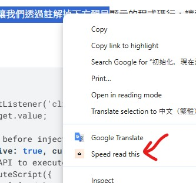

Highlight any text on a webpage that you want to speed read. Right-click on the selected text and choose "Speed read this" from the context menu.

The speed reading panel will appear. Adjust the RPM (words per minute) to your desired reading speed, then click the play button to start reading.